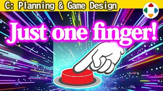
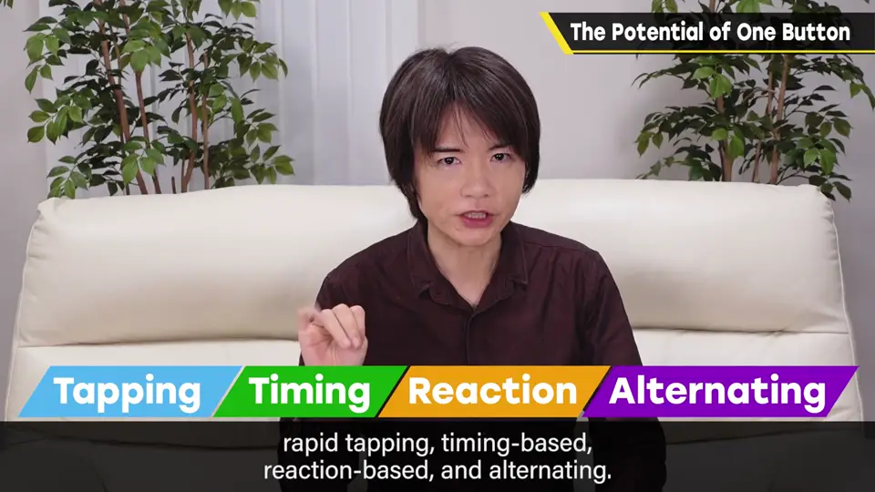
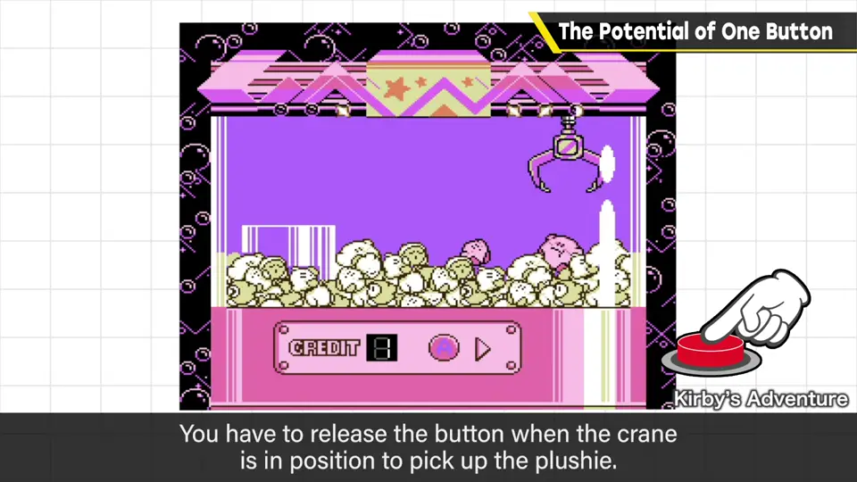
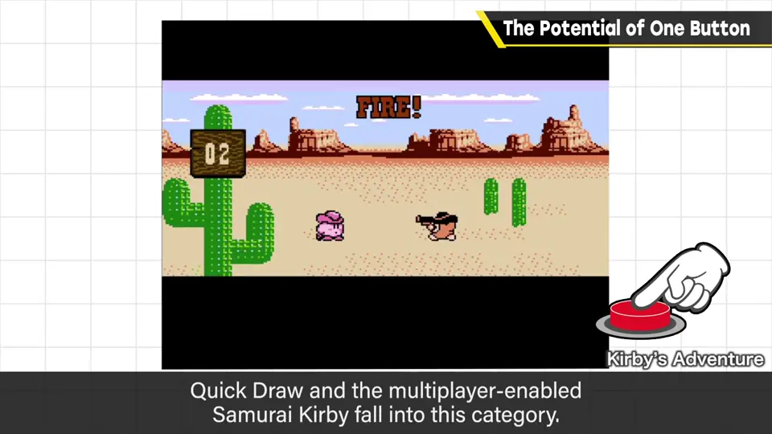
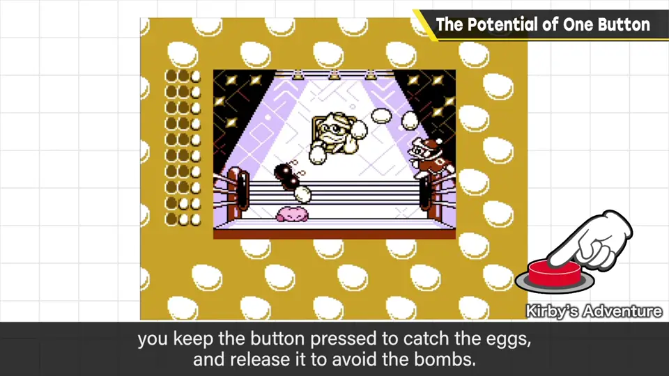
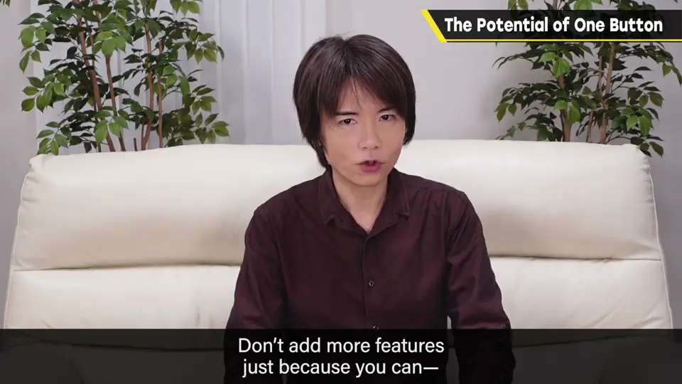

速览
只用一个按钮也能做游戏。实际上《星之卡比 梦之泉物语》和《星之卡比 超级豪华版》中，樱井都把一键游戏做成了小游戏。一键游戏大致有 4 类：① 连打——比按钮连打速度，个人差异大、难以逆转，而且很累，如今可能不流行了；② 时机——在规定时机按下，如「起重机狂热」里在能抓到玩偶的位置按下按钮，「百万吨重拳（Megaton Punch）」画面表现不同但也是这一类；③ 抢按（反应）——随信号尽快按下，如「快枪卡比」和可对战的「刹那见切」，是纯粹的反射神经游戏，但用假动作让人按错时机等也能产生博弈；④ 切换——区分按住与松开并适当切换，如「接蛋」小游戏：蛋来时按住，炸弹来时松开。长按也是一种，但可能不太有助于游戏性；最近「长按确认」的作品增多了。一个按钮能做的事其实不少，和其他操作组合起来更是如此。无论如何，游玩感与操作感相契合最重要——不是塞进功能就好，要好好考虑手感。正因为简单，演出才更有效。
1. 一键游戏的四类 0:04
只用一个按钮也能做游戏。实际上《星之卡比 梦之泉物语》和《星之卡比 超级豪华版》中，樱井都实装了一键小游戏。一键游戏大致分为 4 类：
| 类型 | 玩法 | 例子与特点 |
|---|---|---|
| ① 连打 | 比连打按钮的速度 | 个人差异大、难以逆转，而且累——如今可能不流行 |
| ② 时机 | 在规定时机按下按钮 | 「起重机狂热」：在能抓到玩偶的位置按下；「百万吨重拳」虽表现不同也属此类 |
| ③ 抢按（反应） | 随信号尽快按下 | 「快枪卡比」、可对战的「刹那见切」；纯反射神经，但用假动作诱人误按等能产生博弈 |
| ④ 切换 | 区分按住与松开，适当切换 | 「接蛋」：蛋来时按住，炸弹来时松开 |




「长按」似乎也算一种，但可能不太有助于游戏性。最近「长按确认」的作品变多了。
2. 契合与简单 1:44
一个按钮能做的事其实不少；和其他操作组合，能做的就更多了。
无论如何，游玩感与操作感相契合最重要。不是塞进功能就好，要好好考虑手感。正因为简单，演出才更有效。

自测题
1. 一键游戏可以分为哪四类？
连打、时机、抢按（反应）、切换。 0:15
2. 为什么樱井说连打类可能不再流行？
个人差异大、难以逆转，而且很累。 0:27
3. 「抢按」类本是纯反射，怎样产生博弈？
用假动作等诱使对手按错时机。 1:10